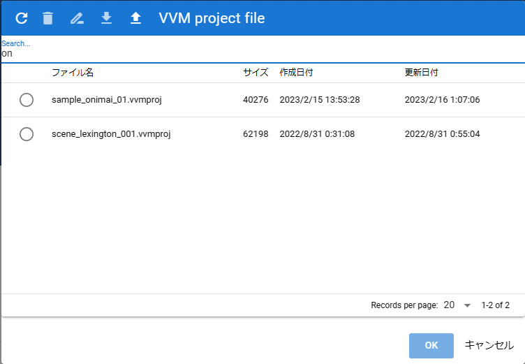

6.18. Internal storage dialog
This screen is for opening animation projects saved in the app or files that have been opened before.
Toolbar:
- Reload:
Reload the list.
- Remove:
Delete the selected file (from within the app).
- File type name:
The name of the currently displayed file type.
Note
The following are animation projects only.
- rename:
Rename the selected project file.
- download:
Download and save the selected animation project.
- open from file:
Open the animation project file from your terminal.
- search box:
Input field for incremental search of each file.
- List:
A list that displays the file name, size, creation date, and update date.